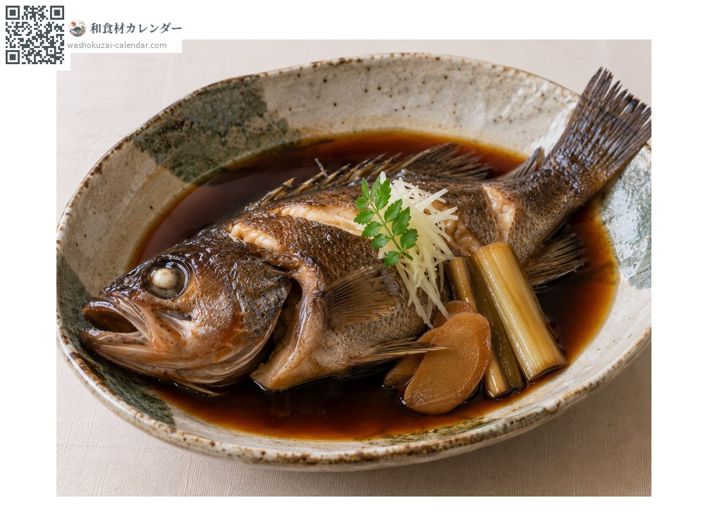
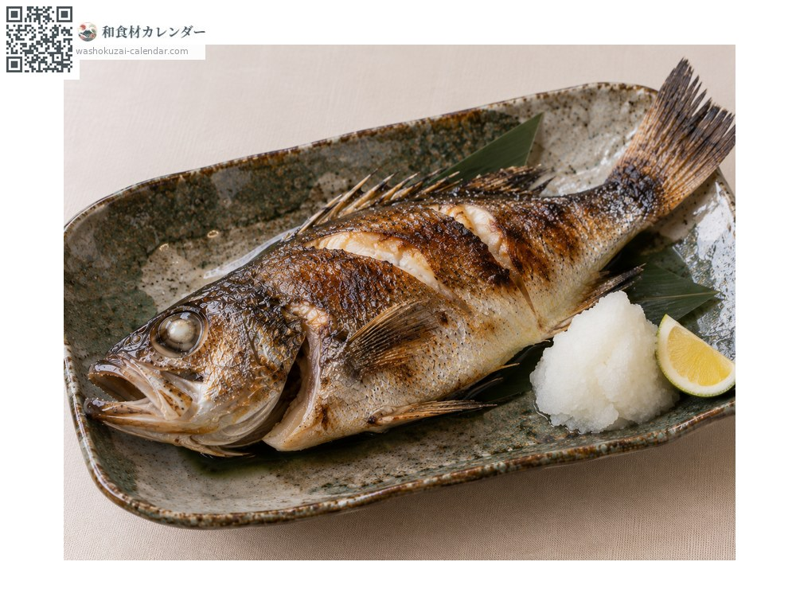
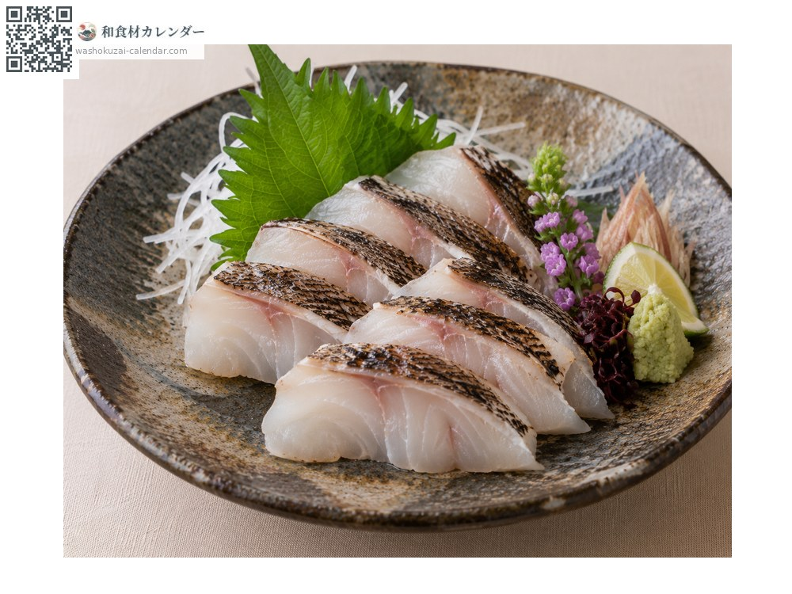
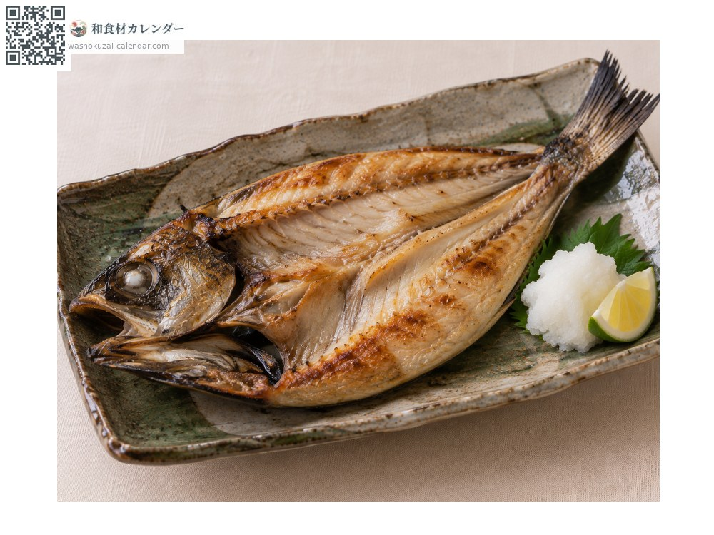

อาหารทะเล
ปลาคุโรมุตสึ (ปลาเก๋าคอดำตัวดำ)
クロムツ くろむつ kuromutsu
ชื่ออื่นkuromutsu
อร่อยที่สุดในเดือน ม.ค., ก.พ., พ.ย., ธ.ค.

ช่วงที่อร่อยที่สุด
ม.ค.
ก.พ.
มี.ค.
เม.ย.
พ.ค.
มิ.ย.
ก.ค.
ส.ค.
ก.ย.
ต.ค.
พ.ย.
ธ.ค.
ช่วงอร่อยที่สุดมีจำหน่าย
วิธีปรุง

ตุ๋นซีอิ๊วหวาน
เมนูมาตรฐาน มันเยอะจึงเหมาะกับรสที่เข้มขึ้นเล็กน้อย

ย่างเกลือ
ย่างจนมันหยด ด้านหนังหอม

ซาชิมิ
เป็นปลาเนื้อขาวแต่มันเข้มข้น ย่างผิวเบา ๆ จะหอมขึ้น

ตากลมหนึ่งคืน
ผ่าแล้วตากหนึ่งคืน รสอูมามิจะเข้มขึ้น
วิธีเลือก
ลำตัวสีดำเป็นมันวาว ตาใส ท้องแน่น
วิธีเก็บรักษา
มันเยอะและเกิดกลิ่นหืนง่าย ควักไส้แล้วแช่เย็น ใช้ภายใน 2 วัน
แหล่งผลิตหลัก
เกร็ดน่ารู้
เป็นคนละชนิดกับโนโดะงุโระ ชนิดนี้ลำตัวเป็นสีดำ เป็นปลาน้ำลึกและในปากก็ดำเช่นกัน มันเยอะจนบางครั้งถูกเรียกว่าโทโระแห่งปลาเนื้อขาวเหมือนกัน